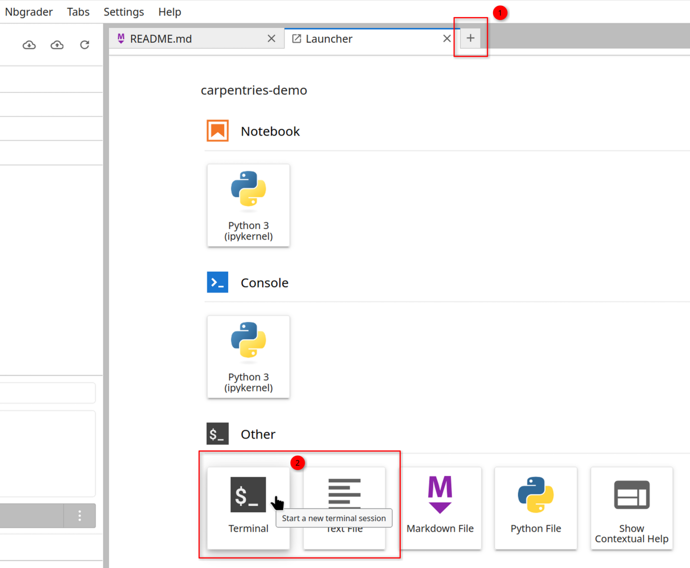
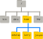
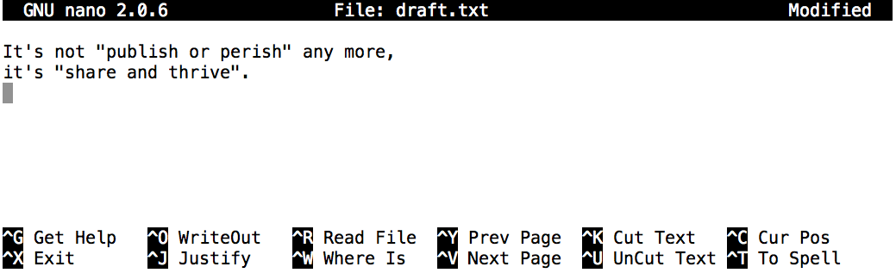

All in One View
Content from Introducing the Shell
Last updated on 2026-09-30 | Edit this page
Overview
Questions
- What is a command shell and why would I use one?
Objectives
- Explain how the shell relates to the keyboard, the screen, the operating system, and users’ programs.
- Explain when and why command-line interfaces should be used instead of graphical interfaces.
What is the Shell?
Humans and computers commonly interact in many different ways, such as through a keyboard and mouse, touch screen interfaces, or using speech recognition systems. The most widely used way to interact with personal computers is called a graphical user interface (GUI). With a GUI, we give instructions by clicking a mouse and using menu-driven interactions.
While the visual aid of a GUI makes it intuitive to learn, this way of interacting scales very poorly for some tasks.
A command-line interface (CLI) allows users to interact with a computer by reading and writing text. It excels at making repetitive tasks automatic and fast.
A shell is a particular program that lets you type commands. In this workshop, we will be using “Bash” which is the most popular Unix shell. Bash is often the default shell on Unix and in Unix-like tools for Windows.
Why use the shell?
Imagine the following task: for a literature search, you have to copy the third line of one thousand text files in one thousand different directories and paste it into a single file.
Using a GUI, you would not only be clicking at your desk for several hours, but you could potentially also commit an error in the process of completing this repetitive task.
Using a CLI, you can write a series of commands that does this consistently and nearly instantly.
The shell can be used for simple tasks like creating an empty folder and for launching (even complex) programs with a single command. In fact, some tools and resources such as cloud computing systems usually require users to be familiar with the shell. Shell commands can be combined together and saved into reproducible scripts that automate repetitive tasks.
Using the shell will take some effort and some time to learn. While a GUI presents you with choices to select, CLI choices are not automatically presented to you. It can be daunting at first, but once you’ve come familiar with this different style of interacting, you will be able to efficiently accomplish a huge variety of tasks.
Let’s get started.
There are many places you might access a shell. For example you might remotely connect to a server using “SSH”, allowing you to use a Bash shell on that server. If you are running Linux on your own computer, you might use Bash through a Terminal program. Or on Windows, you might use the CMD or Powershell shells to run commands.
In these workshops, we will be using our JupyterHub’s Terminal to access a Bash shell. JupyterHub is commonly used for scientific programming, but it also has a built-in terminal. We will use this as it’s ready-to-use and allows our helpers to view your shell real-time to help with any questions.
To use it, open a new tab in your JupyterLab then select Terminal:

When the shell is first opened, you are presented with a prompt, indicating that the shell is waiting for input.
The shell typically uses $ as the prompt, but may use a
different symbol. In the examples for this lesson, we’ll show the prompt
as $. Most importantly, do not type the prompt
when typing commands. Only type the command that follows the prompt.
This rule applies both in these lessons and in lessons from other
sources. Also note that after you type a command, you have to press the
Enter key to execute it.
The prompt is followed by a text cursor, a character that indicates the position where your typing will appear. The cursor is usually a flashing or solid block, but it can also be an underscore or a pipe. You may have seen it in a text editor program, for example.
Note that your prompt might look a little different. In particular,
most popular shell environments by default put your user name, the host
name, and your current file path before the $. For example,
your prompt on JupyterHub might look like this:
What is “jovyan”?
“jovyan” is the username that JupyterHub uses (from “Jovian” for the planet “Jupiter”!).
Here, “user-1” is the hostname of this server. Each workshop attendee gets their own server.
Some prompts might even include more than this. Do not worry if your
prompt is not just a short $. This lesson does not depend
on this additional information and it should also not get in your way.
The only important item to focus on is the $ character
itself and we will see later why.
So let’s try our first command, ls, which is short for
listing. This command will list the contents of the current
directory:
OUTPUT
README.md exercise-data north-pacific-gyreJovyan’s Pipeline: A Typical Problem
Jovyan Jetty, a marine biologist, has just returned from a six-month
survey of the North Pacific
Gyre, where she has been sampling gelatinous marine life in the Great
Pacific Garbage Patch. She has 1520 samples that she’s run through
an assay machine to measure the relative abundance of 300 proteins. She
needs to run these 1520 files through an imaginary program called
goostats.sh. In addition to this huge task, she has to
write up results by the end of the month, so her paper can appear in a
special issue of Aquatic Goo Letters.
If Jovyan chooses to run goostats.sh by hand using a
GUI, she’ll have to select and open a file 1520 times. If
goostats.sh takes 30 seconds to run each file, the whole
process will take more than 12 hours of Jovyan’s attention. With the
shell, Jovyan can instead assign her computer this mundane task while
she focuses her attention on writing her paper.
The next few lessons will explore the ways Jovyan can achieve this.
More specifically, the lessons explain how she can use a command shell
to run the goostats.sh program for all her files, so that
her computer can work while she writes her paper.
As a bonus, once she has put a processing pipeline together, she will be able to use it again whenever she collects more data.
In order to achieve her task, Jovyan needs to know how to:
- navigate to a file/directory
- create a file/directory
- chain commands together
- retrieve a set of files
- run a shell script containing her pipeline
- A shell is a program whose primary purpose is to read commands and run other programs.
- This lesson uses Bash, the default shell in many implementations of Unix.
- Programs can be run in Bash by entering commands at the command-line prompt.
- The shell’s main advantages are its high action-to-keystroke ratio, its support for automating repetitive tasks, and its capacity to access networked machines.
- A significant challenge when using the shell can be knowing what commands need to be run and how to run them.
Content from Navigating Files and Directories
Last updated on 2026-10-04 | Edit this page
Overview
Questions
- How can I move around on my computer?
- How can I see what files and directories I have?
- How can I specify the location of a file or directory on my computer?
Objectives
- Explain the similarities and differences between a file and a directory.
- Translate an absolute path into a relative path and vice versa.
- Construct absolute and relative paths that identify specific files and directories.
- Use options and arguments to change the behaviour of a shell command.
- Demonstrate the use of tab completion and explain its advantages.
The part of the operating system responsible for managing files and directories is called the file system. It organizes our data into files, which hold information, and directories (also called ‘folders’), which hold files or other directories.
Several commands are frequently used to create, inspect, rename, and delete files and directories. To start exploring them, we’ll go to our open shell window.
First, let’s find out where we are by running a command called
pwd (which stands for ‘print working directory’).
Directories are like places — at any time while we are using
the shell, we are in exactly one place called our current
working directory. Commands mostly read and write files in the
current working directory, i.e. ‘here’, so knowing where you are before
running a command is important. pwd shows you where you
are:
OUTPUT
/home/jovyan/stfc-carpentries-shell-noviceHere, the computer’s response is
/home/jovyan/stfc-carpentries-shell-novice, which is the
data for this lesson in the user’s (jovyan) home
directory:
Home Directory Variation
The home directory path will look different on different operating
systems. On Linux, it may look like /home/jovyan, and on
Windows, it will be similar to
C:\Documents and Settings\jovyan or
C:\Users\jovyan. (Note that it may look slightly different
for different versions of Windows.) The output shown in the examples
below comes from our JupyterHub (Ubuntu Linux); on other systems it may
differ slightly but should be generally similar.
We will also assume that you are working inside your lesson
directory: pwd should show
/home/jovyan/stfc-carpentries-shell-novice. If
pwd returns something different, navigate there using
cd or some commands in this lesson will not work as
written. See Exploring Other
Directories for more details on the cd command.
To understand what a ‘home directory’ is, let’s have a look at how the file system as a whole is organized. For the sake of this example, we’ll be illustrating the filesystem on our scientist Jovyan’s computer. After this illustration, you’ll be learning commands to explore your own filesystem, which will be constructed in a similar way, but not be exactly identical.
On Jovyan’s computer, the filesystem looks like this:
The filesystem looks like an upside down tree. The topmost directory
is the root directory that holds everything else. We
refer to it using a slash character, /, on its own; this
character is the leading slash in /home/jovyan.
Inside that directory are several other directories: bin
(which is where some built-in programs are stored), data
(for miscellaneous data files), home (where users’ personal
directories are located), tmp (for temporary files that
don’t need to be stored long-term), and so on.
We know that our current working directory /home/jovyan
is stored inside /home because /home is the
first part of its name. Similarly, we know that /home is
stored inside the root directory / because its name begins
with /.
Slashes
Notice that there are two meanings for the / character.
When it appears at the front of a file or directory name, it refers to
the root directory. When it appears inside a path, it’s just a
separator.
Underneath /home, we find one directory for each user
with an account on Jovyan’s machine, her colleagues imhotep and
larry.

The user imhotep’s files are stored in
/home/imhotep, user larry’s in
/home/larry, and Jovyan’s in /home/jovyan.
Jovyan is the user in our examples here; therefore, we get
/home/jovyan as our home directory. Typically, when you
open a new command prompt, you will be in your home directory to start.
But in this workshop, you might automatically start in the sub-folder
for this lesson.
Now let’s learn the command that will let us see the contents of our
own filesystem. We can see what’s in our current folder by running
ls:
OUTPUT
README.md exercise-data north-pacific-gyre(Again, your results may be slightly different depending on if you
started in the home folder /home/jovyan, or the lesson
folder /home/jovyan/stfc-carpentries-shell-novice.)
ls prints the names of the files and directories in the
current directory. We can make its output more comprehensible by using
the -F option which tells ls
to classify the output by adding a marker to file and directory names to
indicate what they are:
- a trailing
/indicates that this is a directory -
@indicates a link -
*indicates an executable
Depending on your shell’s default settings, the shell might also use colors to indicate whether each entry is a file or directory. In our JupyterHub, folders are shown in blue and files in black.
OUTPUT
README.md exercise-data/ north-pacific-gyre/Here, we can see that the home directory some
sub-directories ending with a /. And one
file README.md with no classifier marker
at the end.
If your screen gets too cluttered, you can clear your terminal using
the clear command. You can still access previous commands
using ↑ and ↓ to move line-by-line, or by
scrolling in your terminal.
For some Bash configurations, clear may also clear the
scrollbuffer and you will not be able to scroll back after using
clear; using clear -x prevents this.
An alternative to clear -x is the keyboard shortcut
Control-L.
Getting help
ls has lots of other options. There are
two common ways to find out how to use a command and what options it
accepts — depending on your environment, you might find that
only one of these ways works:
- We can pass a
--helpoption to any command (available on Linux and Git Bash), for example:
- We can read its manual with
man(available on Linux and macOS):
We’ll describe both ways next.
Help for built-in commands
Some commands are built in to the Bash shell, rather than existing as
separate programs on the filesystem. One example is the cd
(change directory) command. If you get a message like
No manual entry for cd, try help cd instead.
The help command is how you get usage information for Bash
built-ins.
The --help option
Most bash commands and programs that people have written to be run
from within bash, support a --help option that displays
more information on how to use the command or program.
OUTPUT
Usage: ls [OPTION]... [FILE]...
List information about the FILEs (the current directory by default).
Sort entries alphabetically if none of -cftuvSUX nor --sort is specified.
Mandatory arguments to long options are mandatory for short options, too.
-a, --all do not ignore entries starting with .
-A, --almost-all do not list implied . and ..
--author with -l, print the author of each file
-b, --escape print C-style escapes for nongraphic characters
--block-size=SIZE scale sizes by SIZE before printing them; e.g.,
'--block-size=M' prints sizes in units of
1,048,576 bytes; see SIZE format below
-B, --ignore-backups do not list implied entries ending with ~
-c with -lt: sort by, and show, ctime (time of last
change of file status information);
with -l: show ctime and sort by name;
otherwise: sort by ctime, newest first
-C list entries by columns
--color[=WHEN] colorize the output; WHEN can be 'always' (default
if omitted), 'auto', or 'never'; more info below
-d, --directory list directories themselves, not their contents
-D, --dired generate output designed for Emacs' dired mode
-f list all entries in directory order
-F, --classify append indicator (one of */=>@|) to entries
... ... ...When to use short or long options
When options exist as both short and long options:
- Use the short option when typing commands directly into the shell to minimize keystrokes and get your task done faster.
- Use the long option in scripts to provide clarity. It will be read many times and typed once.
The man command
The other way to learn about ls is to type
This command will turn your terminal into a page with a description
of the ls command and its options.
To navigate through the man pages, you may use
↑ and ↓ to move line-by-line, or try b
and Spacebar to skip up and down by a full page. To search
for a character or word in the man pages, use /
followed by the character or word you are searching for. Sometimes a
search will result in multiple hits. If so, you can move between hits
using N (for moving forward) and
Shift+N (for moving backward).
To quit the man pages, press
q.
Manual pages on the web
Of course, there is a third way to access help for commands:
searching the internet via your web browser. When using internet search,
including the phrase unix man page in your search query
will help to find relevant results.
GNU provides links to its manuals including the core GNU utilities, which covers many commands introduced within this lesson.
Exploring More ls Options
You can also use two options at the same time. What does the command
ls do when used with the -l option? What about
if you use both the -l and the -h option
(which you can shorten to -lh)?
Some of its output is about properties that we do not cover in this lesson (such as file permissions and ownership), but the rest should be useful nevertheless.
The -l option makes ls use a
long listing format, showing not only the
file/directory names but also additional information, such as the file
size and the time of its last modification. If you use both the
-h option and the -l option, this makes the
file size ‘human readable’, i.e. displaying something
like 5.3K instead of 5369.
Listing in Reverse Chronological Order
By default, ls lists the contents of a directory in
alphabetical order by name. The command ls -t lists items
by time of last change instead of alphabetically. The command
ls -r lists the contents of a directory in reverse order.
Which file is displayed last when you combine the -t and
-r options? Hint: You may need to use the -l
option to see the last changed dates.
The most recently changed file is listed last when using
-rt. This can be very useful for finding your most recent
edits or checking to see if a new output file was written.
Exploring Other Directories
Not only can we use ls on the current working directory,
but we can use it to list the contents of a different directory. Let’s
take a look at our exercise-data directory by running
ls -F exercise-data, i.e., the command ls with
the -F options and the argument
exercise-data. The argument exercise-data
tells ls that we want a listing of something other than our
current working directory:
OUTPUT
alkanes/ animal-counts/ creatures/ numbers.txt writing/Note that if a directory named exercise-data does not
exist in your current working directory, this command will return an
error.
Organizing things hierarchically helps us keep track of our work. While it’s possible to put hundreds of files in our home directory just as it’s possible to pile hundreds of printed papers on our desk, it’s much easier to find things when they’ve been organized into sensibly-named subdirectories.
Now that we know what’s inside the exercise-data
directory, we might want to actually change our location into it.
The command to change locations is cd followed by a
directory name to change our working directory. cd stands
for ‘change directory’, which is a bit misleading. The command doesn’t
change the directory; it changes the shell’s current working directory.
In other words it changes the shell’s settings for what directory we are
in. The cd command is akin to double-clicking a folder in a
graphical interface to get into that folder.
Let’s say we want to move into the exercise-data
directory we saw above. We can use the following command to get
there:
Or, from our home directory /home/jovyan, we might have
to do multiple steps:
These commands will move us from our home directory into the
stfc-carpentries-shell-novice directory, then into the
exercise-data directory.
You will notice that cd doesn’t print anything. This is
normal. Many shell commands will not output anything to the screen when
successfully executed. But if we run pwd after it, we can
see that we are now in
/home/jovyan/stfc-carpentries-shell-novice/exercise-data.
If we run ls -F without arguments now, it lists the
contents of
/home/jovyan/stfc-carpentries-shell-novice/exercise-data,
because that’s where we now are:
OUTPUT
/home/jovyan/stfc-carpentries-shell-novice/exercise-dataOUTPUT
alkanes/ animal-counts/ creatures/ numbers.txt writing/We now know how to go down the directory tree (i.e. how to go into a subdirectory), but how do we go up (i.e. how do we leave a directory and go into its parent directory)? We might try the following:
ERROR
-bash: cd: stfc-carpentries-shell-novice: No such file or directoryBut we get an error! Why is this?
With our methods so far, cd can only see sub-directories
inside your current directory. There are different ways to see
directories above your current location; we’ll start with the
simplest.
There is a shortcut in the shell to move up one directory level. It works as follows:
.. is a special directory name meaning “the directory
containing this one”, or more succinctly, the parent of
the current directory. Sure enough, if we run pwd after
running cd .., we’re back in
/home/jovyan/stfc-carpentries-shell-novice:
OUTPUT
/home/jovyan/stfc-carpentries-shell-noviceThe special directory .. doesn’t usually show up when we
run ls. If we want to display it, we can add the
-a option to ls -F:
OUTPUT
./ ../ exercise-data/ north-pacific-gyre/-a stands for ‘show all’ (including hidden files); it
forces ls to show us file and directory names that begin
with ., such as .. (which, if we’re in
/home/jovyan, refers to the /home directory).
As you can see, it also displays another special directory that’s just
called ., which means ‘the current working directory’. It
may seem redundant to have a name for it, but we’ll see some uses for it
soon.
Note that in most command line tools, multiple options can be
combined with a single - and no spaces between the options;
ls -F -a is equivalent to ls -Fa.
These three commands are the basic commands for navigating the
filesystem on your computer: pwd, ls, and
cd. Let’s explore some variations on those commands. What
happens if you type cd on its own, without giving a
directory?
How can you check what happened? pwd gives us the
answer!
OUTPUT
/home/jovyanIt turns out that cd without an argument will return you
to your home directory, which is great if you’ve got lost in your own
filesystem.
Let’s try returning to the exercise-data directory from
before. Last time, we used three commands, but we can actually string
together the list of directories to move to exercise-data
in one step:
Check that we’ve moved to the right place by running pwd
and ls -F.
If we want to move up one level from the data directory, we could use
cd ... But there is another way to move to any directory,
regardless of your current location.
So far, when specifying directory names, or even a directory path (as
above), we have been using relative paths. When you use
a relative path with a command like ls or cd,
it tries to find that location from where we are, rather than from the
root of the file system.
However, it is possible to specify the absolute path
to a directory by including its entire path from the root directory,
which is indicated by a leading slash. The leading / tells
the computer to follow the path from the root of the file system, so it
always refers to exactly one directory, no matter where we are when we
run the command.
This allows us to move to our
stfc-carpentries-shell-novice directory from anywhere on
the filesystem (including from inside exercise-data). To
find the absolute path we’re looking for, we can use pwd
and then extract the piece we need to move to
stfc-carpentries-shell-novice.
OUTPUT
/home/jovyan/stfc-carpentries-shell-novice/exercise-dataRun pwd and ls -F to ensure that we’re in
the directory we expect.
Two More Shortcuts
The shell interprets a tilde (~) character at the start
of a path to mean “the current user’s home directory”. For example, if
Jovyan’s home directory is /home/jovyan, then
~/data is equivalent to /home/jovyan/data.
This only works if it is the first character in the path;
here/there/~/elsewhere is not
here/there/home/jovyan/elsewhere.
Another shortcut is the - (dash) character.
cd will translate - into the previous
directory I was in, which is faster than having to remember, then
type, the full path. This is a very efficient way of moving
back and forth between two directories – i.e. if you execute
cd - twice, you end up back in the starting directory.
The difference between cd .. and cd - is
that the former brings you up, while the latter brings you
back.
Try it! First navigate to
~/stfc-carpentries-shell-novice (you should already be
there).
Then cd into the exercise-data/creatures
directory
Now if you run
you’ll see you’re back in
~/stfc-carpentries-shell-novice. Run cd -
again and you’re back in
~/stfc-carpentries-shell-novice/exercise-data/creatures
Absolute vs Relative Paths
Starting from
/home/jovyan/stfc-carpentries-shell-novice, which of the
following commands could Jovyan use to navigate to her home directory,
which is /home/jovyan?
cd .cd /cd /home/jovyancd ../..cd ~cd homecd ~/stfc-carpentries-shell-novice/..cdcd ..
- No:
.stands for the current directory. - No:
/stands for the root directory. - Yes: The absolute path Jovyan’s home directory is
/home/jovyan, but this is a lot to type. - No: this command goes up two levels, i.e. ends in
/home. - Yes:
~stands for the user’s home directory, in this case/home/jovyan. - No: this command would navigate into a directory
homein the current directory if it exists. - Yes: unnecessarily complicated, but correct.
- Yes: shortcut to go back to the user’s home directory.
- Yes: goes up one level.
Relative Path Resolution
Using the filesystem diagram below, if pwd displays
/home/thing, what will ls -F ../backup
display?
../backup: No such file or directory2012-12-01 2013-01-08 2013-01-272012-12-01/ 2013-01-08/ 2013-01-27/original/ pnas_final/ pnas_sub/
- No: there is a directory
backupin/home. - No: this is the content of
Users/thing/backup, but with.., we asked for one level further up. - No: see previous explanation.
- Yes:
../backup/refers to/home/backup/.
ls Reading Comprehension
Using the filesystem diagram below, if pwd displays
/Users/backup, and -r tells ls to
display things in reverse order, what command(s) will result in the
following output:
OUTPUT
pnas_sub/ pnas_final/ original/ls pwdls -r -Fls -r -F /Users/backup
- No:
pwdis not the name of a directory. - Yes:
lswithout directory argument lists files and directories in the current directory. - Yes: uses the absolute path explicitly.
General Syntax of a Shell Command
We have now encountered commands, options, and arguments, but it is perhaps useful to formalise some terminology.
Consider the command below as a general example of a command, which we will dissect into its component parts:

ls is the command, with an
option -F and an argument
/. We’ve already encountered options which either start
with a single dash (-), known as short
options, or two dashes (--), known as long
options. Options
change the behavior of a command and Arguments
tell the command what to operate on (e.g. files and directories).
Sometimes options and arguments are referred to as
parameters. A command can be called with more than one
option and more than one argument, but a command doesn’t always require
an argument or an option.
You might sometimes see options being referred to as switches or flags, especially for options that take no argument. In this lesson we will stick with using the term option.
Each part is separated by spaces. If you omit the space between
ls and -F the shell will look for a command
called ls-F, which doesn’t exist. Also, capitalization can
be important. For example, ls -s will display the size of
files and directories alongside the names, while ls -S will
sort the files and directories by size, as shown below:
OUTPUT
total 20
4 alkanes
4 animal-counts
4 creatures
4 numbers.txt
4 writingNote that the sizes returned by ls -s are in
blocks. As these are defined differently for different
operating systems, you may not obtain the same figures as in the
example.
OUTPUT
alkanes
animal-counts
creatures
writing
numbers.txtPutting all that together, our command ls -F / above
gives us a listing of files and directories in the root directory
/. An example of the output you might get from the above
command is given below:
OUTPUT
bin@ boot/ dev/ etc/ home/ lib@ lib32@ lib64@ media/ mnt/
opt/ proc/ root/ run@ sbin@ srv/ sys/ tmp/ usr/ var@Jovyan’s Pipeline: Organizing Files
Knowing this much about files and directories, Jovyan is ready to organize the files that the protein assay machine will create.
She creates a directory called north-pacific-gyre (to
remind herself where the data came from), which will contain the data
files from the assay machine and her data processing scripts.
Each of her physical samples is labelled according to her lab’s
convention with a unique ten-character ID, such as ‘NENE01729A’. This ID
is what she used in her collection log to record the location, time,
depth, and other characteristics of the sample, so she decides to use it
within the filename of each data file. Since the output of the assay
machine is plain text, she will call her files
NENE01729A.txt, NENE01812A.txt, and so on. All
1520 files will go into the same directory.
Now in her current directory
stfc-carpentries-shell-novice, Jovyan can see what files
she has using the command:
This command is a lot to type, but she can let the shell do most of the work through what is called tab completion. If she types:
and then presses Tab (the tab key on her keyboard), the shell automatically completes the directory name for her:
Pressing Tab again does nothing, since there are multiple possibilities; pressing Tab twice brings up a list of all the files.
If Jovyan then presses G and then presses Tab again, the shell will append ‘goo’ since all files that start with ‘g’ share the first three characters ‘goo’.
To see all of those files, she can press Tab twice more.
This is called tab completion, and we will see it in many other tools as we go on.
- The file system is responsible for managing information on the disk.
- Information is stored in files, which are stored in directories (folders).
- Directories can also store other directories, which then form a directory tree.
-
pwdprints the user’s current working directory. -
ls [path]prints a listing of a specific file or directory;lson its own lists the current working directory. -
cd [path]changes the current working directory. - Most commands take options that begin with a single
-. - Directory names in a path are separated with
/on Unix, but\on Windows. -
/on its own is the root directory of the whole file system. - An absolute path specifies a location from the root of the file system.
- A relative path specifies a location starting from the current location.
-
.on its own means ‘the current directory’;..means ‘the directory above the current one’.
Content from Working With Files and Directories
Last updated on 2026-10-02 | Edit this page
Overview
Questions
- How can I create, copy, and delete files and directories?
- How can I edit files?
Objectives
- Delete, copy and move specified files and/or directories.
- Create files in that hierarchy using an editor or by copying and renaming existing files.
- Create a directory hierarchy that matches a given diagram.
Creating directories
We now know how to explore files and directories, but how do we create them in the first place?
In this episode we will learn about creating and moving files and
directories, using the exercise-data/writing directory as
an example.
Step one: see where we are and what we already have
We should still be in the stfc-carpentries-shell-novice
directory in our home folder, which we can check using:
OUTPUT
/home/jovyan/stfc-carpentries-shell-noviceNext we’ll move to the exercise-data/writing directory
and see what it contains:
OUTPUT
haiku.txt LittleWomen.txtCreate a directory
Let’s create a new directory called thesis using the
command mkdir thesis (which has no output):
As you might guess from its name, mkdir means ‘make
directory’. Since thesis is a relative path (i.e., does not
have a leading slash, like /what/ever/thesis), the new
directory is created in the current working directory:
OUTPUT
haiku.txt LittleWomen.txt thesis/Since we’ve just created the thesis directory, there’s
nothing in it yet:
Note that mkdir is not limited to creating single
directories one at a time. The -p option allows
mkdir to create a directory with nested subdirectories in a
single operation:
Let’s use ls -F to list the new directories we just
created in the project directory:
OUTPUT
data/ results/Two ways of doing the same thing
Using the shell to create a directory is no different than using a
file explorer. If you open the current directory using your operating
system’s graphical file explorer, the thesis directory will
appear there too. While the shell and the file explorer are two
different ways of interacting with the files, the files and directories
themselves are the same.
Good names for files and directories
Complicated names of files and directories can make your life painful when working on the command line. Here we provide a few useful tips for the names of your files and directories.
- Don’t use spaces.
Spaces can make a name more meaningful, but since spaces are used to
separate arguments on the command line it is better to avoid them in
names of files and directories. You can use - or
_ instead (e.g. north-pacific-gyre/ rather
than north pacific gyre/). To test this out, try typing
mkdir north pacific gyre and see what directory (or
directories!) are made when you check with ls -F.
- Don’t begin the name with
-(dash).
Commands treat names starting with - as options.
- Stick with lowercase letters, numbers,
.(period or ‘full stop’),-(dash) and_(underscore).
Many other characters have special meanings on the command line. We will learn about some of these during this lesson. There are special characters that can cause your command to not work as expected and can even result in data loss.
If you need to refer to names of files or directories that have
spaces or other special characters, you should surround the name in
single quotes
('').
It is often good practice to use all lowercase letters in names of
files and directories; Windows and macOS file systems are typically case
insensitive and therefore unable to distinguish between
thesis and Thesis in the same directory.
Create a text file
Let’s change our working directory to thesis using
cd, then run a text editor called Nano to create a file
called draft.txt:
Which Editor?
When we say, ‘nano is a text editor’ we really do mean
‘text’. It can only work with plain character data, not tables, images,
or any other human-friendly media. We use it in examples because it is
one of the least complex text editors. However, because of this trait,
it may not be powerful enough or flexible enough for the work you need
to do after this workshop. On Unix systems (such as Linux and macOS),
many programmers use Emacs or Vim (both of which require more time to
learn), or a graphical editor such as Gedit or VScode. On Windows, you may
wish to use Notepad++.
Windows also has a built-in editor called notepad that can
be run from the command line in the same way as nano for
the purposes of this lesson.
No matter what editor you use, you will need to know where it searches for and saves files. If you start it from the shell, it will (probably) use your current working directory as its default location. If you use your computer’s start menu, it may want to save files in your Desktop or Documents directory instead. You can change this by navigating to another directory the first time you ‘Save As…’
Let’s type in a few lines of text.

Once we’re happy with our text, we can press
Ctrl+O (press the Ctrl or
Control key and, while holding it down, press the
O key) to write our data to disk. We will be asked to provide
a name for the file that will contain our text. Press Return
to accept the suggested default of draft.txt.
Once our file is saved, we can use Ctrl+X to quit the editor and return to the shell.
Control, Ctrl, or ^ Key
The Control key is also called the ‘Ctrl’ key. There are various ways in which using the Control key may be described. For example, you may see an instruction to press the Control key and, while holding it down, press the X key, described as any of:
Control-XControl+XCtrl-XCtrl+X^XC-x
In nano, along the bottom of the screen you’ll see
^G Get Help ^O WriteOut. This means that you can use
Control-G to get help and Control-O to save
your file.
nano doesn’t leave any output on the screen after it
exits, but ls now shows that we have created a file called
draft.txt:
OUTPUT
draft.txtCreating Files a Different Way
We have seen how to create text files using the nano
editor. Now, try the following command:
What did the
touchcommand do? When you look at your current directory using the GUI file explorer, does the file show up?Use
ls -lto inspect the files. How large ismy_file.txt?When might you want to create a file this way?
The
touchcommand generates a new file calledmy_file.txtin your current directory. You can observe this newly generated file by typinglsat the command line prompt.my_file.txtcan also be viewed in your GUI file explorer.When you inspect the file with
ls -l, note that the size ofmy_file.txtis 0 bytes. In other words, it contains no data. If you openmy_file.txtusing your text editor it is blank.Some programs do not generate output files themselves, but instead require that empty files have already been generated. When the program is run, it searches for an existing file to populate with its output. The touch command allows you to efficiently generate a blank text file to be used by such programs.
Creating Files a Different Way (continued)
What’s In A Name?
You may have noticed that all of Jovyan’s files are named ‘something
dot something’, and in this part of the lesson, we always used the
extension .txt. This is just a convention; we can call a
file mythesis or almost anything else we want. However,
most people use two-part names most of the time to help them (and their
programs) tell different kinds of files apart. The second part of such a
name is called the filename extension and indicates
what type of data the file holds: .txt signals a plain text
file, .pdf indicates a PDF document, .cfg is a
configuration file full of parameters for some program or other,
.png is a PNG image, and so on.
This is just a convention, albeit an important one. Files merely contain bytes; it’s up to us and our programs to interpret those bytes according to the rules for plain text files, PDF documents, configuration files, images, and so on.
Naming a PNG image of a whale as whale.mp3 doesn’t
somehow magically turn it into a recording of whale song, though it
might cause the operating system to associate the file with a
music player program. In this case, if someone double-clicked
whale.mp3 in a file explorer program, the music player will
automatically (and erroneously) attempt to open the
whale.mp3 file.
Moving files and directories
Returning to the
stfc-carpentries-shell-novice/exercise-data/writing
directory,
In our thesis directory we have a file
draft.txt which isn’t a particularly informative name, so
let’s change the file’s name using mv, which is short for
‘move’:
The first argument tells mv what we’re ‘moving’, while
the second is where it’s to go. In this case, we’re moving
thesis/draft.txt to thesis/quotes.txt, which
has the same effect as renaming the file. Sure enough, ls
shows us that thesis now contains one file called
quotes.txt:
OUTPUT
quotes.txtOne must be careful when specifying the target file name, since
mv will silently overwrite any existing file with the same
name, which could lead to data loss. By default, mv will
not ask for confirmation before overwriting files. However, an
additional option, mv -i (or
mv --interactive), will cause mv to request
such confirmation.
Note that mv also works on directories.
Let’s move quotes.txt into the current working
directory. We use mv once again, but this time we’ll use
just the name of a directory as the second argument to tell
mv that we want to keep the filename but put the file
somewhere new. (This is why the command is called ‘move’.) In this case,
the directory name we use is the special directory name .
that we mentioned earlier.
The effect is to move the file from the directory it was in to the
current working directory. ls now shows us that
thesis is empty:
OUTPUT
Alternatively, we can confirm the file quotes.txt is no
longer present in the thesis directory by explicitly trying
to list it:
ERROR
ls: cannot access 'thesis/quotes.txt': No such file or directoryls with a filename or directory as an argument only
lists the requested file or directory. If the file given as the argument
doesn’t exist, the shell returns an error as we saw above. We can use
this to see that quotes.txt is now present in our current
directory:
OUTPUT
quotes.txtMoving Files to a new folder
After running the following commands, Jamie realizes that she put the
files sucrose.dat and maltose.dat into the
wrong folder. The files should have been placed in the raw
folder.
BASH
$ ls -F
analyzed/ raw/
$ ls -F analyzed
fructose.dat glucose.dat maltose.dat sucrose.dat
$ cd analyzedMultiple files can be moved at once, so long as the last argument is the destination directory.
Fill in the blanks to move these files to the raw/
folder (i.e. the one she forgot to put them in)
Copying files and directories
The cp command works very much like mv,
except it copies a file instead of moving it. We can check that it did
the right thing using ls with two paths as arguments — like
most Unix commands, ls can be given multiple paths at
once:
OUTPUT
quotes.txt thesis/quotations.txtThe -r or --recursive option for
cp applies the command not just to the specified directory,
but to all its contents.
As an example, we can use this to back up a directory:
We can check the result by listing the contents of both the
thesis and thesis_backup directory:
OUTPUT
thesis:
quotations.txt
thesis_backup:
quotations.txtIt is important to include the -r flag. If you want to
copy a directory and you omit this option you will see a message that
the directory has been omitted because
-r not specified.
ERROR
cp: -r not specified; omitting directory 'thesis'Destination Can Be New Name or Directory
When we use two arguments with mv or cp,
the second argument can be the location and new name we want our file to
have. Alternatively, if we provide the path to an existing directory as
the second argument, mv/cp will interpret that
to mean that we want the file copied/moved to that directory without
changing its name.
For example:
accomplishes the same thing as
Renaming Files
Suppose that you created a plain-text file in your current directory
to contain a list of the statistical tests you will need to do to
analyze your data, and named it statstics.txt
After creating and saving this file you realize you misspelled the filename! You want to correct the mistake, which of the following commands could you use to do so?
cp statstics.txt statistics.txtmv statstics.txt statistics.txtmv statstics.txt .cp statstics.txt .
- No. While this would create a file with the correct name, the incorrectly named file still exists in the directory and would need to be deleted.
- Yes, this would work to rename the file.
- No, the period(.) indicates where to move the file, but does not provide a new file name; identical file names cannot be created.
- No, the period(.) indicates where to copy the file, but does not provide a new file name; identical file names cannot be created.
Moving and Copying
What is the output of the closing ls command in the
sequence shown below?
OUTPUT
/home/jamie/dataOUTPUT
proteins.datBASH
$ mkdir recombined
$ mv proteins.dat recombined/
$ cp recombined/proteins.dat ../proteins-saved.dat
$ lsproteins-saved.dat recombinedrecombinedproteins.dat recombinedproteins-saved.dat
We start in the /home/jamie/data directory, and create a
new folder called recombined. The second line moves
(mv) the file proteins.dat to the new folder
(recombined). The third line makes a copy of the file we
just moved. The tricky part here is where the file was copied to. Recall
that .. means ‘go up a level’, so the copied file is now in
/home/jamie. Notice that .. is interpreted
with respect to the current working directory, not with
respect to the location of the file being copied. So, the only thing
that will show using ls (in /home/jamie/data) is the
recombined folder.
- No, see explanation above.
proteins-saved.datis located at/home/jamie - Yes
- No, see explanation above.
proteins.datis located at/home/jamie/data/recombined - No, see explanation above.
proteins-saved.datis located at/home/jamie
Removing files and directories
Returning to the
stfc-carpentries-shell-novice/exercise-data/writing
directory, let’s tidy up this directory by removing the
quotes.txt file we created. The Unix command we’ll use for
this is rm (short for ‘remove’):
We can confirm the file has gone using ls:
ERROR
ls: cannot access 'quotes.txt': No such file or directoryDeleting Is Forever
The Unix shell doesn’t have a trash bin that we can recover deleted files from (though most graphical interfaces to Unix do). Instead, when we delete files, they are unlinked from the file system so that their storage space on disk can be recycled. Tools for finding and recovering deleted files do exist, but there’s no guarantee they’ll work in any particular situation, since the computer may recycle the file’s disk space right away.
Using rm Safely
What happens when we execute
rm -i thesis_backup/quotations.txt? Why would we want this
protection when using rm?
OUTPUT
rm: remove regular file 'thesis_backup/quotations.txt'? yThe -i option will prompt before (every) removal (use
Y to confirm deletion or N to keep the file). The
Unix shell doesn’t have a trash bin, so all the files removed will
disappear forever. By using the -i option, we have the
chance to check that we are deleting only the files that we want to
remove.
If we try to remove the thesis directory using
rm thesis, we get an error message:
ERROR
rm: cannot remove 'thesis': Is a directoryThis happens because rm by default only works on files,
not directories.
rm can remove a directory and all its contents
if we use the recursive option -r, and it will do so
without any confirmation prompts:
Given that there is no way to retrieve files deleted using the shell,
rm -r should be used with great caution (you might
consider adding the interactive option rm -r -i).
Operations with multiple files and directories
Oftentimes one needs to copy or move several files at once. This can be done by providing a list of individual filenames, or specifying a naming pattern using wildcards. Wildcards are special characters that can be used to represent unknown characters or sets of characters when navigating the Unix file system.
Copy with Multiple Filenames
For this exercise, you can test the commands in the
stfc-carpentries-shell-novice/exercise-data directory.
We have seen how cp behaves when given two arguments.
The second argument can be a filename (what to name the copy) or an
existing directory (where to put the copy).
cp behaves slightly differently when given three or more
arguments. Let’s try giving cp three arguments. In the
example below, what does cp do when given several filenames
and a directory name?
In the example below, what does cp do when given three
or more file names?
OUTPUT
basilisk.dat minotaur.dat unicorn.datWhen cp is given three or more arguments, the last
argument must be a directory. cp copies the other files
specified into that directory. If the last argument is a file name, you
get an error:
ERROR
cp: target 'basilisk.dat': Not a directoryUsing wildcards for accessing multiple files at once
Wildcards
* is a wildcard, which represents zero
or more other characters. Let’s consider the
stfc-carpentries-shell-novice/exercise-data/alkanes
directory: *.pdb represents ethane.pdb,
propane.pdb, and every file that ends with ‘.pdb’. On the
other hand, p*.pdb only represents pentane.pdb
and propane.pdb, because the ‘p’ at the front can only
represent filenames that begin with the letter ‘p’.
? is also a wildcard, but it represents exactly one
character. So ?ethane.pdb could represent
methane.pdb whereas *ethane.pdb represents
both ethane.pdb and methane.pdb.
Wildcards can be used in combination with each other. For example,
???ane.pdb indicates three characters followed by
ane.pdb, giving
cubane.pdb ethane.pdb octane.pdb.
When the shell sees a wildcard, it expands the wildcard to create a
list of matching filenames before running the preceding
command. As an exception, if a wildcard expression does not match any
file, Bash will pass the expression as an argument to the command as it
is. For example, typing ls *.pdf in the
alkanes directory (which contains only files with names
ending with .pdb) results in an error message that there is
no file called *.pdf. However, generally commands like
ls see the lists of file names matching these expressions,
but not the wildcards themselves. It is the shell, not the other
programs, that expands the wildcards.
List filenames matching a pattern
When run in the alkanes directory, which ls
command(s) will produce this output?
ethane.pdb methane.pdb
ls *t*ane.pdbls *t?ne.*ls *t??ne.pdbls ethane.*
The solution is 3.
1. shows all files whose names contain zero or more
characters (*) followed by the letter t, then
zero or more characters (*) followed by
ane.pdb. This gives
ethane.pdb methane.pdb octane.pdb pentane.pdb.
2. shows all files whose names start with zero or more
characters (*) followed by the letter t, then
a single character (?), then ne. followed by
zero or more characters (*). This will give us
octane.pdb and pentane.pdb but doesn’t match
anything which ends in thane.pdb.
3. fixes the problems of option 2 by matching two
characters (??) between t and ne.
This is the solution.
4. only shows files starting with
ethane..
More on Wildcards
Sam has a directory containing calibration data, datasets, and descriptions of the datasets:
BASH
.
├── 2015-10-23-calibration.txt
├── 2015-10-23-dataset1.txt
├── 2015-10-23-dataset2.txt
├── 2015-10-23-dataset_overview.txt
├── 2015-10-26-calibration.txt
├── 2015-10-26-dataset1.txt
├── 2015-10-26-dataset2.txt
├── 2015-10-26-dataset_overview.txt
├── 2015-11-23-calibration.txt
├── 2015-11-23-dataset1.txt
├── 2015-11-23-dataset2.txt
├── 2015-11-23-dataset_overview.txt
├── backup
│ ├── calibration
│ └── datasets
└── send_to_bob
├── all_datasets_created_on_a_23rd
└── all_november_filesBefore heading off to another field trip, she wants to back up her data and send some datasets to her colleague Bob. Sam uses the following commands to get the job done:
BASH
$ cp *dataset* backup/datasets
$ cp ____calibration____ backup/calibration
$ cp 2015-____-____ send_to_bob/all_november_files/
$ cp ____ send_to_bob/all_datasets_created_on_a_23rd/Help Sam by filling in the blanks.
The resulting directory structure should look like this
BASH
.
├── 2015-10-23-calibration.txt
├── 2015-10-23-dataset1.txt
├── 2015-10-23-dataset2.txt
├── 2015-10-23-dataset_overview.txt
├── 2015-10-26-calibration.txt
├── 2015-10-26-dataset1.txt
├── 2015-10-26-dataset2.txt
├── 2015-10-26-dataset_overview.txt
├── 2015-11-23-calibration.txt
├── 2015-11-23-dataset1.txt
├── 2015-11-23-dataset2.txt
├── 2015-11-23-dataset_overview.txt
├── backup
│ ├── calibration
│ │ ├── 2015-10-23-calibration.txt
│ │ ├── 2015-10-26-calibration.txt
│ │ └── 2015-11-23-calibration.txt
│ └── datasets
│ ├── 2015-10-23-dataset1.txt
│ ├── 2015-10-23-dataset2.txt
│ ├── 2015-10-23-dataset_overview.txt
│ ├── 2015-10-26-dataset1.txt
│ ├── 2015-10-26-dataset2.txt
│ ├── 2015-10-26-dataset_overview.txt
│ ├── 2015-11-23-dataset1.txt
│ ├── 2015-11-23-dataset2.txt
│ └── 2015-11-23-dataset_overview.txt
└── send_to_bob
├── all_datasets_created_on_a_23rd
│ ├── 2015-10-23-dataset1.txt
│ ├── 2015-10-23-dataset2.txt
│ ├── 2015-10-23-dataset_overview.txt
│ ├── 2015-11-23-dataset1.txt
│ ├── 2015-11-23-dataset2.txt
│ └── 2015-11-23-dataset_overview.txt
└── all_november_files
├── 2015-11-23-calibration.txt
├── 2015-11-23-dataset1.txt
├── 2015-11-23-dataset2.txt
└── 2015-11-23-dataset_overview.txtOrganizing Directories and Files
Jamie is working on a project, and she sees that her files aren’t very well organized:
OUTPUT
analyzed/ fructose.dat raw/ sucrose.datThe fructose.dat and sucrose.dat files
contain output from her data analysis. What command(s) covered in this
lesson does she need to run so that the commands below will produce the
output shown?
OUTPUT
analyzed/ raw/OUTPUT
fructose.dat sucrose.datReproduce a folder structure
You’re starting a new experiment and would like to duplicate the directory structure from your previous experiment so you can add new data.
Assume that the previous experiment is in a folder called
2016-05-18, which contains a data folder that
in turn contains folders named raw and
processed that contain data files. The goal is to copy the
folder structure of the 2016-05-18 folder into a folder
called 2016-05-20 so that your final directory structure
looks like this:
OUTPUT
2016-05-20/
└── data
├── processed
└── rawWhich of the following set of commands would achieve this objective? What would the other commands do?
The first two sets of commands achieve this objective. The first set uses relative paths to create the top-level directory before the subdirectories.
The third set of commands will give an error because the default
behavior of mkdir won’t create a subdirectory of a
non-existent directory: the intermediate level folders must be created
first.
The fourth set of commands achieve this objective. Remember, the
-p option, followed by a path of one or more directories,
will cause mkdir to create any intermediate subdirectories
as required.
The final set of commands generates the ‘raw’ and ‘processed’ directories at the same level as the ‘data’ directory.
-
cp [old] [new]copies a file. -
mkdir [path]creates a new directory. -
mv [old] [new]moves (renames) a file or directory. -
rm [path]removes (deletes) a file. -
*matches zero or more characters in a filename, so*.txtmatches all files ending in.txt. -
?matches any single character in a filename, so?.txtmatchesa.txtbut notany.txt. - Use of the Control key may be described in many ways, including
Ctrl-X,Control-X, and^X. - The shell does not have a trash bin: once something is deleted, it’s really gone.
- Most files’ names are
something.extension. The extension isn’t required, and doesn’t guarantee anything, but is normally used to indicate the type of data in the file. - Depending on the type of work you do, you may need a more powerful text editor than Nano.
Content from Finding Things
Last updated on 2026-10-05 | Edit this page
Overview
Questions
- How can I find files?
- How can I view the contents of a file?
- How can I find things in files?
Objectives
- Display the contents of a file with
cat. - Use
grepto select lines from text files that match simple patterns. - Use
findto find files and directories whose names match simple patterns. - Use the output of one command as the command-line argument(s) to another command.
- Explain what is meant by ‘text’ and ‘binary’ files, and why many common tools don’t handle the latter well.
In the same way that many of us now use ‘Google’ as a verb meaning ‘to find’, Unix programmers often use the word ‘grep’. ‘grep’ is a contraction of ‘global/regular expression/print’, a common sequence of operations in early Unix text editors. It is also the name of a very useful command-line program.
grep finds and prints lines in files that match a
pattern. For our examples, we will use a file that contains three haiku
taken from a 1998
competition in Salon magazine (Credit to authors Bill
Torcaso, Howard Korder, and Margaret Segall, respectively. See Haiku
Error Messages archived Page
1 and Page
2 .). For this set of examples, we’re going to be working in the
writing subdirectory:
OUTPUT
The Tao that is seen
Is not the true Tao, until
You bring fresh toner.
With searching comes loss
and the presence of absence:
"My Thesis" not found.
Yesterday it worked
Today it is not working
Software is like that.Viewing files with cat
We just used cat to display the whole of
haiku.txt on the screen.
cat is short for concatenate. Given one
file, it prints that file to the screen; given several files, it prints
them one after the other:
OUTPUT
The Tao that is seen
Is not the true Tao, until
You bring fresh toner.
With searching comes loss
and the presence of absence:
"My Thesis" not found.
Yesterday it worked
Today it is not working
Software is like that.
The Tao that is seen
Is not the true Tao, until
You bring fresh toner.
With searching comes loss
and the presence of absence:
"My Thesis" not found.
Yesterday it worked
Today it is not working
Software is like that.See how the file appeared twice? That is where the name comes from:
cat glues files together.
cat always prints the entire file. That is
perfect for something short like our haiku, but it is not how we want to
read a large file. For that we have two more tools: head
and tail.
Looking at the start and end: head and
tail
Our writing directory also contains
LittleWomen.txt, the full text of the novel — over twenty
thousand lines. Try cat on it and the screen fills with
text faster than you can read it.
OUTPUT
The Project Gutenberg EBook of Little Women, by Louisa May Alcott
This eBook is for the use of anyone anywhere at no cost and with
almost no restrictions whatsoever...
[ thousands of lines later ]
subscribe to our email newsletter to hear about new eBooks.(Press Ctrl+C to stop a command like this once it is doing something you did not want.)
To see just the beginning of a large file, use
head. It prints the first 10 lines by default:
OUTPUT
The Project Gutenberg EBook of Little Women, by Louisa May Alcott
This eBook is for the use of anyone anywhere at no cost and with
almost no restrictions whatsoever. You may copy it, give it away or
re-use it under the terms of the Project Gutenberg License included
with this eBook or online at www.gutenberg.net
Title: Little WomenAnd tail prints the last 10 lines. For log-like
files this is often the end you want: recent entries are at the end.
OUTPUT
Most people start at our Web site which has the main PG search facility:
http://www.gutenberg.net
This Web site includes information about Project Gutenberg-tm,
including how to make donations to the Project Gutenberg Literary
Archive Foundation, how to help produce our new eBooks, and how to
subscribe to our email newsletter to hear about new eBooks.Both accept the -n flag to change the number of
lines:
OUTPUT
The Project Gutenberg EBook of Little Women, by Louisa May Alcott
This eBook is for the use of anyone anywhere at no cost and withThese are good first checks on a log or a data file: look at the first and last few lines to see what you have, instead of reading the whole thing.
Watching a file as it grows: tail -f
tail also has a follow mode, tail -f, which
you can use to follow a file as it grows.
To see this, open a second terminal (in JupyterLab, click the + button and choose Terminal again).
In tab 2, run this loop and leave it alone:
BASH
$ cd ~/stfc-carpentries-shell-novice/exercise-data/writing
$ timeout 10m bash -c 'while true; do fortune >> fortunes.txt; sleep 2; done'You do not need to understand this loop yet. Treat it as a small
machine that reads a fortune and appends it to the file
fortunes.txt, one every two seconds, for up to 10 minutes.
It prints nothing, and the prompt does not come back while it runs,
because the command has not finished.
You could press Ctrl+C to stop it, and the
prompt returns. This is worth remembering in general:
Ctrl+C stops whatever command is running in the
foreground. (The >> writes into the file; we meet it
properly in the next few episodes.)
Instead of stopping it, switch to tab 1 and follow the file:
tail -f first shows whatever is already in the file,
then waits. Each time the loop appends another fortune, it appears here
straight away (yours will be different):
OUTPUT
You will inherit some money or a small piece of land.
Q: How many surrealists does it take to change a light bulb?
A: Two: one to hold the giraffe, one to fill the bathtub
with brightly colored machine tools.
You like to form new friendships or make new alliances.To finish, press Ctrl+C in tab 1 to stop
tail -f, then press Ctrl+C in tab 2
to stop the fortune loop. Both prompts come back.
This is how you follow a running job’s log: leave
tail -f open while the job writes to the file.
Browsing long files with less
We’ve now met head and tail for looking at
the start and the end of a file.
But we have one more useful tool for browsing long files:
less.
This is the same interface we used to browse man pages,
so we can navigate the same way.
We go up and down with ↑ and ↓
To go to the end, press capital G. And for the start, g
To search, use / followed by the word you are searching for.
Sometimes a search will result in multiple hits. If so, you can move between hits using N (for moving forward) and Shift+N (for moving backward).
To quit less, press q.
Finding lines in files
Going back to our haikus, let’s find lines that contain the word
‘not’ using grep, a commandline tool:
OUTPUT
Is not the true Tao, until
"My Thesis" not found.
Today it is not workingHere, not is the pattern we’re searching for. The grep
command searches through the file, looking for matches to the pattern
specified. To use it type grep, then the pattern we’re
searching for and finally the name of the file (or files) we’re
searching in.
The output is the three lines in the file that contain the letters ‘not’.
By default, grep searches for a pattern in a case-sensitive way. In addition, the search pattern we have selected does not have to form a complete word, as we will see in the next example.
Let’s search for the pattern: ‘The’.
OUTPUT
The Tao that is seen
"My Thesis" not found.This time, two lines that include the letters ‘The’ are outputted, one of which contained our search pattern within a larger word, ‘Thesis’.
To restrict matches to lines containing the word ‘The’ on its own, we
can give grep the -w option. This will limit
matches to word boundaries.
Later in this lesson, we will also see how we can change the search behavior of grep with respect to its case sensitivity.
OUTPUT
The Tao that is seenNote that a ‘word boundary’ includes the start and end of a line, so
not just letters surrounded by spaces. Sometimes we don’t want to search
for a single word, but a phrase. We can also do this with
grep by putting the phrase in quotes.
OUTPUT
Today it is not workingWe’ve now seen that you don’t have to have quotes around single words, but it is useful to use quotes when searching for multiple words. It also helps to make it easier to distinguish between the search term or phrase and the file being searched. We will use quotes in the remaining examples.
Another useful option is -n, which numbers the lines
that match:
OUTPUT
5:With searching comes loss
9:Yesterday it worked
10:Today it is not workingHere, we can see that lines 5, 9, and 10 contain the letters ‘it’.
We can combine options (i.e. flags) as we do with other Unix
commands. For example, let’s find the lines that contain the word ‘the’.
We can combine the option -w to find the lines that contain
the word ‘the’ and -n to number the lines that match:
OUTPUT
2:Is not the true Tao, until
6:and the presence of absence:Now we want to use the option -i to make our search
case-insensitive:
OUTPUT
1:The Tao that is seen
2:Is not the true Tao, until
6:and the presence of absence:Now, we want to use the option -v to invert our search,
i.e., we want to output the lines that do not contain the word
‘the’.
OUTPUT
1:The Tao that is seen
3:You bring fresh toner.
4:
5:With searching comes loss
7:"My Thesis" not found.
8:
9:Yesterday it worked
10:Today it is not working
11:Software is like that.Similar to how the -r option applies cp to
an entire directory’s contents, we can add -r (recursive)
to our grep command to search for a pattern through all the
files in a directory and its subdirectories.
Let’s search for Yesterday in the
stfc-carpentries-shell-novice/exercise-data/writing
directory:
OUTPUT
./haiku.txt:Yesterday it worked
./LittleWomen.txt:"Yesterday, when Aunt was asleep and I was trying to be as still as a
./LittleWomen.txt:Yesterday at dinner, when an Austrian officer stared at us and then
./LittleWomen.txt:Yesterday was a quiet day spent in teaching, sewing, and writing in myThe order in which files are listed is not significant; it may differ on your system.
grep has lots of other options. To find out what they
are, we can type:
OUTPUT
Usage: grep [OPTION]... PATTERNS [FILE]...
Search for PATTERNS in each FILE.
Example: grep -i 'hello world' menu.h main.c
PATTERNS can contain multiple patterns separated by newlines.
Pattern selection and interpretation:
-E, --extended-regexp PATTERNS are extended regular expressions
-F, --fixed-strings PATTERNS are strings
-G, --basic-regexp PATTERNS are basic regular expressions
-e, --regexp=PATTERNS use PATTERNS for matching
-i, --ignore-case ignore case distinctions in patterns and data
-w, --word-regexp match only whole words
-z, --null-data a data line ends in 0 byte, not newline
Miscellaneous:
-v, --invert-match select non-matching lines
--help display this help text and exit
... ... ...Using grep
Which command would result in the following output:
OUTPUT
and the presence of absence:grep "of" haiku.txtgrep -E "of" haiku.txtgrep -w "of" haiku.txtgrep -i "of" haiku.txt
The correct answer is 3, because the -w option looks
only for whole-word matches. The other options will also match ‘of’ when
part of another word.
Wildcards
grep‘s real power doesn’t come from its options, though;
it comes from the fact that patterns can include wildcards. (The
technical name for these is regular expressions, which
is what the ’re’ in ‘grep’ stands for.) Regular expressions are both
complex and powerful; if you want to do complex searches, please look at
the lesson on our
website. As a taster, we can find lines that have an ‘o’ in the
second position like this:
OUTPUT
You bring fresh toner.
Today it is not working
Software is like that.We use the -E option and put the pattern in quotes to
prevent the shell from trying to interpret it. (If the pattern contained
a *, for example, the shell would try to expand it before
running grep.) The ^ in the pattern anchors
the match to the start of the line. The . matches a single
character (just like ? in the shell), while the
o matches an actual ‘o’.
Finding survey records
Jovyan’s survey data is in
stfc-carpentries-shell-novice/exercise-data/animal-counts/animals.csv,
which contains one row per date for each species seen:
2012-11-05,deer,5
2012-11-05,rabbit,22
2012-11-05,raccoon,7
2012-11-06,rabbit,19
2012-11-06,deer,2
2012-11-06,fox,4
2012-11-07,rabbit,16
2012-11-07,bear,1- Move into the
animal-countsdirectory and usecatto view the whole file. - Use
grepto display every record in which the species wasdeer.
Searching for files
While grep finds lines in files, the find
command finds files themselves. Again, it has a lot of options; to show
how the simplest ones work, we’ll use the
stfc-carpentries-shell-novice/exercise-data directory tree
shown below.
OUTPUT
.
├── animal-counts/
│ └── animals.csv
├── creatures/
│ ├── basilisk.dat
│ ├── minotaur.dat
│ └── unicorn.dat
├── numbers.txt
├── alkanes/
│ ├── cubane.pdb
│ ├── ethane.pdb
│ ├── methane.pdb
│ ├── octane.pdb
│ ├── pentane.pdb
│ └── propane.pdb
└── writing/
├── haiku.txt
└── LittleWomen.txtThe exercise-data directory contains one file,
numbers.txt and four directories:
animal-counts, creatures, alkanes
and writing containing various files.
For our first command, let’s run find . (remember to run
this command from the
stfc-carpentries-shell-novice/exercise-data folder).
OUTPUT
.
./writing
./writing/LittleWomen.txt
./writing/haiku.txt
./creatures
./creatures/basilisk.dat
./creatures/unicorn.dat
./creatures/minotaur.dat
./animal-counts
./animal-counts/animals.csv
./numbers.txt
./alkanes
./alkanes/ethane.pdb
./alkanes/propane.pdb
./alkanes/octane.pdb
./alkanes/pentane.pdb
./alkanes/methane.pdb
./alkanes/cubane.pdbAs always, the . on its own means the current working
directory, which is where we want our search to start.
find’s output is the names of every file
and directory under the current working directory. This
can seem useless at first but find has many options to
filter the output and in this lesson we will discover some of them.
The first option in our list is -type d that means
‘things that are directories’. Sure enough, find’s output
is the names of the five directories (including .):
OUTPUT
.
./writing
./creatures
./animal-counts
./alkanesNotice that the objects find finds are not listed in any
particular order. If we change -type d to
-type f, we get a listing of all the files instead:
OUTPUT
./writing/LittleWomen.txt
./writing/haiku.txt
./creatures/basilisk.dat
./creatures/unicorn.dat
./creatures/minotaur.dat
./animal-counts/animals.csv
./numbers.txt
./alkanes/ethane.pdb
./alkanes/propane.pdb
./alkanes/octane.pdb
./alkanes/pentane.pdb
./alkanes/methane.pdb
./alkanes/cubane.pdbNow let’s try matching by name:
OUTPUT
./numbers.txtWe expected it to find all the text files, but it only prints out
./numbers.txt. The problem is that the shell expands
wildcard characters like * before commands run.
Since *.txt in the current directory expands to
./numbers.txt, the command we actually ran was:
find did what we asked; we just asked for the wrong
thing.
To get what we want, let’s do what we did with grep: put
*.txt in quotes to prevent the shell from expanding the
* wildcard. This way, find actually gets the
pattern *.txt, not the expanded filename
numbers.txt:
OUTPUT
./writing/LittleWomen.txt
./writing/haiku.txt
./numbers.txtListing vs. Finding
ls and find can be made to do similar
things given the right options, but under normal circumstances,
ls lists everything it can, while find
searches for things with certain properties and shows them.
Finding and searching
It’s very common to use find and grep
together. The first finds files that match a pattern; the second looks
for lines inside those files that match another pattern. Here, for
example, we can find text files that contain the word “searching” by
looking for the string ‘searching’ in all the .txt files in
the current directory:
OUTPUT
./haiku.txt:With searching comes loss
./LittleWomen.txt:sitting on the top step, affected to be searching for her book, but wasWhen the shell runs this command, it first executes
find . -name "*.txt" and replaces the $() with
that command’s output, so grep receives the list of
matching files as its arguments. The output of one command has become
the arguments of the next.
Searching your survey data
You have a folder full of survey and analysis files, and you cannot remember which file contains the records for 7 November 2012.
From stfc-carpentries-shell-novice/exercise-data, find
every CSV file in or below the current directory and search each one for
the date 2012-11-07.
OUTPUT
2012-11-07,rabbit,16
2012-11-07,bear,1find produces the list of CSV files, and
grep searches inside each one. (grep shows the
file names only when it searches several files; here there is just one.)
This is how you search a directory with many files without opening them
one by one.
-
findfinds files with specific properties that match patterns. -
cat [file(s)]prints the contents of files to the screen, joining multiple files together. -
headandtailshow the start or end of a file (10 lines by default,-nchanges the number);tail -ffollows a file as it grows. -
lessallows interactive navigation through text streams or log files (press q to quit). -
grepselects lines in files that match patterns. -
--helpis an option supported by many bash commands, and programs that can be run from within Bash, to display more information on how to use these commands or programs. -
man [command]displays the manual page for a given command. -
$([command])inserts a command’s output in place.
Content from Installing Software with apt
Last updated on 2026-10-02 | Edit this page
Overview
Questions
- How can I install software on a Linux machine?
- How do I find out what software is available?
Objectives
- Explain what a package manager is and why it is preferable to downloading software by hand.
- Update the local package index with
apt update. - Search for and install packages from the command line.
So far we have used commands that came pre-installed on the system. Sooner or later you will want to install something new (a better text editor, a tool for plotting, a new compiler, etc). The usual way to do this is with a package manager.
A package manager keeps a catalogue of thousands of software packages that someone else has already compiled and packaged for your system. Instead of hunting for a download page, extracting an archive, and hoping it works on your machine, you ask the package manager to fetch and install it for you, along with anything it needs to run.
On Ubuntu and other Debian-family systems (including our JupyterHub
servers), the package manager is apt.
Installing a package
cowsay is a small program that makes an ASCII-art cow
say things. Let’s try to install it.
OUTPUT
E: Could not open lock file /var/lib/dpkg/lock-frontend - open (13: Permission denied)
E: Unable to acquire the dpkg frontend lock (/var/lib/dpkg/lock-frontend), are you root?What’s gone wrong?
Installing packages with apt requires administrator or
root privileges.
Installing a package, but as root
Let’s try again to install cowsay.
We can run commands as the root superuser by using the
sudo (“superuser do” or “substitute user, do”) command.
OUTPUT
Reading package lists... Done
Building dependency tree... Done
Reading state information... Done
E: Unable to locate package cowsayWe’ve come across another common issue, but this time it’s a little less clear from the error message what has gone wrong.
apt stores a “cached” list of packages on systems:
rather than searching for online packages online each time you try to
install something, it keeps a local list of the download links for each
package.
Let’s double check that the cowsay package can’t be
found in our apt cache with the apt search command:
OUTPUT
Sorting... Done
Full Text Search... DoneNo results!
Updating our apt cache
An important step before installing or updating packages is to tell
apt to update its local cached package lists.
We do this with the apt update command:
OUTPUT
Get:1 http://security.ubuntu.com/ubuntu noble-security InRelease [126 kB]
Get:2 http://archive.ubuntu.com/ubuntu noble InRelease [256 kB]
Get:3 http://security.ubuntu.com/ubuntu noble-security/universe amd64 Packages [1533 kB]
Get:4 http://archive.ubuntu.com/ubuntu noble-updates InRelease [126 kB]
Get:5 http://archive.ubuntu.com/ubuntu noble-backports InRelease [126 kB]
Get:6 http://security.ubuntu.com/ubuntu noble-security/restricted amd64 Packages [1801 kB]
Get:7 http://archive.ubuntu.com/ubuntu noble/restricted amd64 Packages [117 kB]
Get:8 http://security.ubuntu.com/ubuntu noble-security/main amd64 Packages [1245 kB]
Get:9 http://archive.ubuntu.com/ubuntu noble/main amd64 Packages [1808 kB]
Get:10 http://security.ubuntu.com/ubuntu noble-security/multiverse amd64 Packages [50.0 kB]
Get:11 http://archive.ubuntu.com/ubuntu noble/universe amd64 Packages [19.3 MB]
Get:12 http://archive.ubuntu.com/ubuntu noble/multiverse amd64 Packages [331 kB]
Get:13 http://archive.ubuntu.com/ubuntu noble-updates/multiverse amd64 Packages [56.2 kB]
Get:14 http://archive.ubuntu.com/ubuntu noble-updates/main amd64 Packages [1580 kB]
Get:15 http://archive.ubuntu.com/ubuntu noble-updates/restricted amd64 Packages [1960 kB]
Get:16 http://archive.ubuntu.com/ubuntu noble-updates/universe amd64 Packages [2149 kB]
Get:17 http://archive.ubuntu.com/ubuntu noble-backports/universe amd64 Packages [36.0 kB]
Get:18 http://archive.ubuntu.com/ubuntu noble-backports/multiverse amd64 Packages [671 B]
Get:19 http://archive.ubuntu.com/ubuntu noble-backports/main amd64 Packages [49.0 kB]
Fetched 32.7 MB in 3s (12.3 MB/s)
Reading package lists... Done
Building dependency tree... Done
Reading state information... Done
9 packages can be upgraded. Run 'apt list --upgradable' to see them.We can see above that apt searched through the online
package lists for Ubuntu, the operating system Jupyter is running
on.
It downloaded a copy of each of the lists, 32.7MB of data total, and
wrote it to apt’s locally cached package list.
Let’s once again use apt search to check if we can find
cowsay:
OUTPUT
Sorting... Done
Full Text Search... Done
cowsay/noble 3.03+dfsg2-8 all
configurable talking cow
cowsay-off/noble 3.03+dfsg2-8 all
configurable talking cow (offensive cows)
xcowsay/noble 1.6-1build2 amd64
Graphical configurable talking cowYes, there are now three packages with cowsay in the
name in our local cache!
Above, we used apt update to update our local package
list cache.
This doesn’t update our installed packages, only the cached list of where they can be downloaded from.
After running apt update, packages can be actually
upgraded using apt upgrade.
We saw a hint of this in the output of apt update above,
it said
9 packages can be upgraded. Run 'apt list --upgradable' to see them..
The key point: even though “update” and “upgrade” are synonomous
elsewhere, in apt they mean different things!
Finally installing cowsay
We’re now ready to install our first package:
OUTPUT
Reading package lists... Done
Building dependency tree... Done
Reading state information... Done
The following additional packages will be installed:
libtext-charwidth-perl
Suggested packages:
filters cowsay-off
The following NEW packages will be installed:
cowsay libtext-charwidth-perl
0 upgraded, 2 newly installed, 0 to remove and 9 not upgraded.
Need to get 27.9 kB of archives.
After this operation, 135 kB of additional disk space will be used.
Do you want to continue? [Y/n] y
Get:1 http://archive.ubuntu.com/ubuntu noble/main amd64 libtext-charwidth-perl amd64 0.04-11build3 [9358 B]
Get:2 http://archive.ubuntu.com/ubuntu noble/universe amd64 cowsay all 3.03+dfsg2-8 [18.6 kB]
Fetched 27.9 kB in 0s (226 kB/s)
debconf: delaying package configuration, since apt-utils is not installed
Selecting previously unselected package libtext-charwidth-perl:amd64.
(Reading database ... 46058 files and directories currently installed.)
Preparing to unpack .../libtext-charwidth-perl_0.04-11build3_amd64.deb ...
Unpacking libtext-charwidth-perl:amd64 (0.04-11build3) ...
Selecting previously unselected package cowsay.
Preparing to unpack .../cowsay_3.03+dfsg2-8_all.deb ...
Unpacking cowsay (3.03+dfsg2-8) ...
Setting up libtext-charwidth-perl:amd64 (0.04-11build3) ...
Setting up cowsay (3.03+dfsg2-8) ...
Processing triggers for man-db (2.12.0-4build2) ...Note that it asked us to confirm we wish to proceed by entering
y before it made any changes.
We could have passed the -y flag
(i.e. sudo apt install cowsay -y) to bypass this, but it’s
generally best to review what it plans to install/change and decide only
then whether to let it proceed.
In the above output, we can see that apt didn’t just
install cowsay, it also installed
libtext-charwidth-perl.
This is a dependency, another package which apt
knows is required by cowsay.
This shows why it’s important to check what apt plans to
do before entering y to tell it to proceed: it might
install dependencies that we don’t want, downgrade packages to old but
compatible versions, or automatically remove incompatible packages.
If no dependencies are required, it might not always prompt you to
say y or N.
We also saw some “suggested packages”, filters and
cowsay-off. It won’t install these by default, but it’s
letting you know that they might also be useful or related.
Once installed, the command is immediately available:
OUTPUT
_______________________
< Hello from the shell! >
-----------------------
\ ^__^
\ (oo)\_______
(__)\ )\/\
||----w |
|| ||Install Something Yourself
Use apt search to find a package called
figlet, then install it and use it to print your name in
big letters.
Finding packages
We saw that apt search looks for packages in our local
cache whose name or description matches a term:
OUTPUT
Sorting... Done
Full Text Search... Done
avogadro/noble 1.95.1-2 amd64
Molecular Graphics and Modelling System
openbabel/noble 3.1.1+dfsg-6ubuntu5 amd64
Chemical toolbox utilities (cli)
...Not every piece of software is in the Ubuntu repositories. Sites like
pkgs.org catalogue which package a
program lives in across many distributions, and are a good first stop
when apt search comes up empty.
apt list --installed shows everything currently
installed.
We can check if a specific package is installed like so:
OUTPUT
Listing... Done
cowsay/noble,now 3.03+dfsg2-8 all [installed]In the next lesson, we will use pipes to show how you might search for partial matches.
Removing Packages
The inverse of apt install is apt remove.
Remove cowsay from your system, and check it is gone.
- A package manager installs software and its dependencies from a curated catalogue.
-
apt updaterefreshes the catalogue of available packages. -
apt search [term]searches for packages;apt install [package]installs one. -
apt remove [package]uninstalls a package. - Administrative actions need
sudo.
Content from Pipes and Filters
Last updated on 2026-10-05 | Edit this page
Overview
Questions
- How can I combine existing commands to produce a desired output?
- How can I show only part of the output?
Objectives
- Explain the advantage of linking commands with pipes and filters.
- Combine sequences of commands to get new output
- Redirect a command’s output to a file.
- Explain what usually happens if a program or pipeline isn’t given any input to process.
Now that we know a few basic commands, we can finally look at the shell’s most powerful feature: the ease with which it lets us combine existing programs in new ways.
In our previous lesson, we saw how apt list can show the
packages installed on a machine. Here is (part of) the full list:
OUTPUT
Listing... Done
adduser/noble,now 3.137ubuntu1 all [installed,automatic]
apt/noble-updates,now 2.8.3 amd64 [installed]
base-files/noble-updates,now 13ubuntu10.5 amd64 [installed]
...And before that, we saw how the grep command lets us
search inside files:
OUTPUT
1:The Tao that is seen
2:Is not the true Tao, until
6:and the presence of absence:What if we wanted to find all packages related to Python?
Pipes
We can combine the commands above using a pipe,
|!
Type it withShift + \ (backslash).
Let’s look at an example:
OUTPUT
WARNING: apt does not have a stable CLI interface. Use with caution in scripts.
libpython3-stdlib/noble-updates,noble-security,now 3.12.3-0ubuntu2.1 amd64 [installed,automatic]
libpython3.12-minimal/noble-updates,noble-security,now 3.12.3-1ubuntu0.17 amd64 [installed,automatic]
libpython3.12-stdlib/noble-updates,noble-security,now 3.12.3-1ubuntu0.17 amd64 [installed,automatic]
python3-minimal/noble-updates,noble-security,now 3.12.3-0ubuntu2.1 amd64 [installed,automatic]
python3.12-minimal/noble-updates,noble-security,now 3.12.3-1ubuntu0.17 amd64 [installed,automatic]
python3.12/noble-updates,noble-security,now 3.12.3-1ubuntu0.17 amd64 [installed,automatic]
python3/noble-updates,noble-security,now 3.12.3-0ubuntu2.1 amd64 [installed,automatic]The pipe, |, tells the shell that we want to use the
output of the command on the left as the input of the command on the
right.
I.e. we want to take the output of apt list --installed,
and use it as the input of grep python.
grep hence accepts inputs both from a piped output, or
from a specific file path as we saw previously. Commands like this are
called filters.
At the top of the output, there is a warning:
WARNING: apt does not have a stable CLI interface. Use with caution in scripts.
This is just apt letting you know to not rely on its
piped output when writing shell scripts (which we will look at in the
next section.)
But this does show us something interesting: we searched for lines
containing python, yet this line doesn’t contain that word
and still appeared. Why wasn’t it filtered out?
Every command has three standard streams, which are channels that text flows through:
-
stdin (standard input): where a command reads its
input from. By default this is your keyboard. When you use a pipe, it is
the output of the previous command. This is why
grep pythonworks without a filename: with no file given,grepreads from stdin. -
stdout (standard output): where a command writes
its normal results. By default this is your terminal. This is the stream
a pipe connects to the next command’s stdin, and the stream
>and>>write to files (we will come across these operators soon). - stderr (standard error): where a command writes errors and warnings. By default this is also your terminal, so it looks the same as stdout, but it is a separate stream, and a pipe does not carry it.
So the warning, sent via stderr, went straight to the
screen bypassing grep, while the package list went through
the pipe and was filtered.
We’ll see later how these streams can be handled seperately.
We can even chain multiple pipes together, for example say we wanted to count how many “python” related packages we have:
OUTPUT
7wc is the word-count command. The -l flag
counts the number of lines.
Other Useful Operators
Other than pipes, there are a couple of other useful operators to chain commands
You can use a semicolon, ; to run commands
one-after-another without piping the outputs
OUTPUT
Hello
WorldBash also has a logical AND operator &&, and a
logical OR operator ||
&& will only run the next command if the first
one succeeded.
|| will only run the next if the first one failed.
For example, you might want to only apt upgrade your
packages if the apt update successfully updated your
package cache
OUTPUT
Reading package lists... Done
E: Could not open lock file /var/lib/apt/lists/lock - open (13: Permission denied)
E: Unable to lock directory /var/lib/apt/lists/Notice that the apt update failed since we didn’t use
sudo. But that meant that the sudo apt upgrade
was never run.
Or, with the OR || operator:
OUTPUT
Reading package lists... Done
E: Could not open lock file /var/lib/apt/lists/lock - open (13: Permission denied)
E: Unable to lock directory /var/lib/apt/lists/
That Failed!Now That Failed! was output since the first command
failed.
Pipe, | and OR, || mean different things,
despite using the same character.
File Redirection
The last useful operators we will try are the redirection operators:
the output operator > and the append operator
>>.
These allow you to write the output of commands to files.
For example, say we wanted to store a timestamp of when we did
something. We could write the output of the date command to
a file called timestamp.txt:
OUTPUT
Notice that we didn’t get any output, it was sent to the file instead.
OUTPUT
timestamp.txtLet’s read the file:
OUTPUT
Mon Sep 21 15:46:22 UTC 2026If we try to write another timestamp with >, it will
overwrite the whole file:
OUTPUT
Mon Sep 21 15:48:31 UTC 2026If we want to add to the end of the file instead, we can use the
>> append operator:
OUTPUT
Mon Sep 21 15:48:31 UTC 2026
Mon Sep 21 15:49:50 UTC 2026Be very careful with >. It will replace the contents
of whatever file it points to!
It’s usually best to default to using >>. If the
file doesn’t exist, it will create it for you anyway
Advanced: Redirecting stdout and
stderr separately
Earlier, we saw that apt printed a warning that wasn’t
filtered by grep. That is because the warning was written
to stderr, which a pipe doesn’t carry.
Each stream has a number, and we can put that number in front of
> to say which stream we want to redirect:
| Number | Stream | Meaning | Redirector |
|---|---|---|---|
0 |
stdin |
input to the command | 0> |
1 |
stdout |
normal output |
1> or >
|
2 |
stderr |
errors and warnings | 2> |
So > on its own is shorthand for 1>:
it redirects stdout, which is why errors have still been
appearing on our screen whenever we used it.
We can see the two streams separate by discarding stderr
with 2>. The special file /dev/null throws
away anything written to it:
OUTPUT
libpython3-stdlib/now 3.12.3-0ubuntu2.1 amd64 [installed,local]
libpython3.12-minimal/now 3.12.3-1ubuntu0.17 amd64 [installed,local]
...The warning is now gone, because we sent stderr to
/dev/null.
Or, we can discard stdout with 1> (or
just >):
OUTPUT
WARNING: apt does not have a stable CLI interface. Use with caution in scripts.This time the package list was thrown away, so grep
received nothing to filter and printed nothing. Only the warning is
left, because stderr bypassed the pipe and went straight to
the screen.
Saving errors to a file
Like >, these operators can write to a real file
instead of /dev/null. This lets us keep normal output and
errors apart:
OUTPUT
WARNING: apt does not have a stable CLI interface. Use with caution in scripts.Combining both streams
Sometimes we want errors to travel down the pipe with everything
else. 2>&1 means “send stderr to
wherever stdout is currently going”:
Now the warning is treated like any other line, so grep
filters it out too (it doesn’t contain python). Put
2>&1 before the pipe, not after it.
tee
An alternative to the redirect operators is to pipe to the
tee command.
This will still show you the output, while directing it to a file as well.
| tee is equivalent to >, it overwrites.
| tee -a is equivalent to >>, it
appends.
OUTPUT
Hello WorldSee that we still see the output in our terminal
Is it installed?
Write a single command that prints figlet is installed
if figlet appears in the list of installed packages, and
figlet is NOT installed if it doesn’t.
Hints: grep exits with status 0 if it finds
a match and 1 if it doesn’t. It will also print any
matching lines, but you can send those to /dev/null.
Then try the same command with cowsay, which you removed
earlier.
BASH
$ apt list --installed 2>/dev/null | grep "^figlet/" > /dev/null && echo "figlet is installed" || echo "figlet is NOT installed"-
2>/dev/nullhides apt’s warning. -
grep "^figlet/"matches only a package namedfiglet, rather than any line mentioning it. -
> /dev/nulldiscards the matching line, since we only care whether there was one. -
&&runs the firstechoifgrepfound something.||runs the second if it didn’t.
Strictly, A && B || C isn’t a true if/else: if
B failed, C would also run. For two
echos that doesn’t matter, but in the next episode we’ll
see how scripts do this properly.
-
[command1] | [command2]streams output fromcommand1into input ofcommand2. -
command > [file]redirects output to a file, overwriting existing contents. -
command >> [file]appends output to the end of a file without destroying existing content. -
[command] | tee [file]splits output, writing to both the terminal screen and a file simultaneously (-aappends). -
command1 ; command2runs commands sequentially regardless of success or failure. -
command1 && command2runscommand2ONLY ifcommand1succeeds (returns exit code 0). -
command1 || command2runscommand2ONLY ifcommand1fails (returns a non-zero exit code).
Content from Shell Scripts
Last updated on 2026-10-04 | Edit this page
Overview
Questions
- How can I save and re-use a series of commands?
- What is the difference between running and sourcing a script?
- How do I set up a Python virtual environment in the shell?
Objectives
- Write a shell script that saves a series of commands in a file.
- Run a shell script with
bash, or make it executable and run it directly. - Explain the difference between running and sourcing a script.
- Create and activate a Python virtual environment from the shell.
We are finally ready to see one of the things that makes the shell such a powerful programming environment. We are going to take the commands we repeat frequently and save them in files so that we can re-run all of those operations again later by typing a single command. A bunch of commands saved in a file is usually called a shell script, but make no mistake, these are actually small programs.
Not only will writing shell scripts make your work faster, but also you won’t have to retype the same commands over and over again. It will also make it more accurate (fewer chances for typos) and more reproducible. If you come back to your work later (or if someone else finds your work and wants to build on it), they will be able to reproduce the same results simply by running your script, rather than having to remember or retype a long list of commands.
A first script
Let’s start by making sure we are in our lesson directory and
creating a new file, hello.sh, using the nano
editor we used earlier:
The file does not exist yet, so nano creates it. Type in
the following two lines, then save with Ctrl+O and
quit with Ctrl+X:
echo "Hello from a shell script!"
echo "The time is $(date)"A script can contain any of the commands we have met so far:
ls, grep, find, even
sudo apt install. This one prints a greeting and uses the
command substitution $() we saw in the Finding Things
episode to put the current date and time into the message.
Once we have saved the file, we can ask the shell to execute the
commands it contains. Our shell is called bash, so we run
the following command:
OUTPUT
Hello from a shell script!
The time is Fri Sep 25 14:02:11 UTC 2026Sure enough, our script’s output is exactly what we would get if we typed those commands into the shell one by one.
Text vs. Whatever
We usually call programs like Microsoft Word or LibreOffice Writer
“text editors”, but we need to be a bit more careful when it comes to
programming. By default, Microsoft Word uses .docx files to
store not only text, but also formatting information about fonts,
headings, and so on. This extra information isn’t stored as characters
and doesn’t mean anything to tools like the shell, which expects files
to contain nothing but plain text. When writing scripts, use a plain
text editor such as nano, micro or
vi, and be careful to save files as plain text.
Making a script executable
bash hello.sh works, but you may have noticed that other
commands don’t need bash in front of them. We can run our
script directly too, but we need to do two things first.
The first is to add a shebang line at the very top of the script:
#!/bin/bash
echo "Hello from a shell script!"
echo "The time is $(date)"The shebang, #!, tells the operating system which
program should run the file. Here it says “run this file with
/bin/bash”. (A shebang can point at other interpreters toom
#!/usr/bin/env python3 at the top of a .py
file is a common sight, but we will stick to Bash scripts.)
The second step is to mark the file as executable with
chmod:
OUTPUT
Hello from a shell script!
The time is Fri Sep 25 14:05:37 UTC 2026Why do we need the ./ in front? When we type a command,
the shell searches a list of directories (stored in the
PATH variable) for a program with that name. The current
directory is not in that list, so we tell the shell explicitly: “run
hello.sh from right here”.
What is chmod?
chmod (change mode) sets file permissions.
chmod +x hello.sh adds execute permission for
everyone. There is more to permissions than this: who may read or modify
a file, but +x is the part you need to run scripts.
We can view permissions on files with ls -l.
We see a string like so: -rwxrwxr-x
The first letter, d or - is the file type:
a file or a directory usually.
Then we have three trios of rwx, or - if
the permission is denied.
These are for, in order: the individual owner of the file, people in the group that owns the file, and everyone else on the system.
Jovyan’s Pipeline: running her scripts
Back to Jovyan’s problem. In her north-pacific-gyre
directory she has a script, goostats.sh, that analyses one
data file at a time. She asked an LLM to draft a second script,
goostats-batch.sh, that runs it on many files.
Most scripts you meet will be written by someone else: a colleague, an AI assistant, or an installer from a website. A script runs with all the same permissions you have, so it can read, change and delete any of your files. The important skill isn’t writing scripts, it’s reading one before you run it.
The scripts in this lesson have been checked for you. Don’t extend that trust to scripts from anywhere else.
Let’s first check on our files:
OUTPUT
goostats-batch.sh* goostats.sh* NENE01729A.txt NENE01729B.txt ...The * after the script names is the executable marker we
met with ls -F earlier.
Exercising caution with AI-generated and third-party scripts
Tools like ChatGPT are good at drafting shell scripts for tedious tasks, and there are many useful bash snippets online on sites like StackOverflow. But you must treat them the same way as you’d treat code from a stranger: carefully reading each line, researching unfamiliar segments, to understand what it reads, creates, modifies and deletes.
If you can’t explain what it does after researching, don’t run it. You can usually find another way to do the task, or a colleague to help you.
Be especially wary of:
- Destructive commands like
rm, or the>operator which overwrites files - Path arguments which depend on the current folder, or having specific files.
-
sudo, which gives the script full administrator power - one-liners like
curl/wget <address> | bash, which download and run a script before you’ve had a chance to read it. These are often found in scripts which install software. - any commands you don’t recognise
Read before you run
A script is just a text file, so we can read it with the commands we already know:
You don’t need to understand every symbol, but you do need to be able to say what the script reads, what it writes, and what it deletes.
Here’s some of the elememnts of goostats we might see
commonly in scripts:
-
The comments (lines starting with
#) usually say what the script is for and how to use it. Start there. -
$1and$2are the first and second arguments given to the script,$#is how many there were, and$0is the script’s own name. -
if … then … fiis a check. Read it as English.[ $# -ne 2 ]means “the number of arguments is not equal to 2”.[ -e "$2" ]means “file$2exists”, and!means “not”. -
>&2sends a message to stderr, the error stream from the pipes episode. -
exit 1stops the script and reports failure. Zero means success, anything else means failure. -
The last line does the actual work. It’s a
pipeline, using commands we know (
head,|,>) and one we don’t (cut).
Understanding an unfamiliar line
What does cut -d , -f 1 do? Work it out with
man cut.
What about sort and uniq?
Then paste the last line of goostats.sh into an AI
assistant and ask it to explain. Does its answer match the manual?
Could you now say what this script reads, writes and deletes, before running it?
Running it
Run it with no arguments:
OUTPUT
Usage: ./goostats.sh input_file result_fileThe script tells us how to use it.
Now run it properly on one file, giving an input and a name for the result:
Run the same command again:
OUTPUT
Error: stats-NENE01729A.txt already existsThe script refused to overwrite the earlier result, unlike
> which would do so silently. This is due to the second
of the file checks.
Remove the file before continuing:
rm stats-NENE01729A.txt.
One command for every file
Running this by hand for every sample is exactly the problem from the start of the lesson.
Jovyan created goostats-batch.sh to solve it. Read it
first:
The comments tell us most of what we need. The new part is the
for loop. Read "$@" as “all the arguments”, so
the loop runs goostats.sh once for each file we pass
in.
So how do we pass in a thousand files? With a wildcard:
OUTPUT
Processing NENE01729A.txt
Processing NENE01729B.txt
...The shell expands NENE*.txt into the list of all
matching files before the script starts, just as it
does for cp. The script receives them as separate
arguments. If it’s taking too long, press Ctrl+C
to stop it. Then look at the results:
Clear them with rm stats-* before continuing.
cd fails with an error, but the script carries
on to the next line, so rm -r * runs in the
directory you were already in and deletes everything there. Joining the
commands with &&
(cd old-results && rm -r *) means rm
only runs if cd worked. This is why reading a script before
running it matters.
Running vs. sourcing
There is a second, subtler way to run a script: source.
The difference matters, so let’s see it in action.
Suppose we want a script that takes us to our exercise data. Create
go_data.sh with this single command:
cd ~/stfc-carpentries-shell-novice/exercise-dataNow run it with bash as before, then check where we
are:
OUTPUT
/home/jovyan/stfc-carpentries-shell-noviceNothing happened! Or rather, it did happen — but in a
different shell. When we run a script with bash
(or ./script.sh), a new shell process is started just for
the script. That child shell runs the commands, changes directory, and
then exits, leaving our own shell where it was.
Now try source instead:
OUTPUT
/home/jovyan/stfc-carpentries-shell-novice/exercise-dataThis time our own shell moved. source runs the commands
from the file in the current shell, as if we had typed them
ourselves.
The rule of thumb:
- Use
bash script.shor./script.shfor scripts that do something (process files, install software, print output). - Use
source script.shfor scripts that set up your current shell (change directory, load settings, activate tools).
Go back to the lesson directory with
$ cd ~/stfc-carpentries-shell-novice before continuing.
Example: activating a Python virtual environment
The most common script you will source in practice is a Python virtual environment (venv) activation script.
A virtual environment is a private, per-project set of Python packages. It lets you install and upgrade packages for one project without breaking another project (or the system Python). Let’s create one in our lesson directory:
This creates a folder myenv containing a private copy of
Python, pip, and — crucially — an activation
script:
OUTPUT
activate activate.csh activate.fish Activate.ps1
pip pip3 pip3.12 python
python3 python3.12Activating the environment is a textbook case of sourcing as we want it to affect our current shell:
OUTPUT
(myenv) jovyan@user-1:~/stfc-carpentries-shell-novice $The (myenv) prefix on the prompt tells us the
environment is active. Inside it, python3 and
pip refer to the venv’s own copies:
OUTPUT
/home/jovyan/stfc-carpentries-shell-novice/myenv/bin/python3Packages we install now go into the venv, not the system. As an
example, install pyfiglet: the same idea as the
figlet program you installed with apt, but
this time from the Python Package Index:
OUTPUT
Collecting pyfiglet
Downloading pyfiglet-1.0.4-py3-none-any.whl.metadata (7.4 kB)
Installing collected packages: pyfiglet
Successfully installed pyfiglet-1.0.4Then:
OUTPUT
_ _ _ _ _
| | | | ___| | | ___ | |
| |_| |/ _ \ | |/ _ \| |
| _ | __/ | | (_) |_|
|_| |_|\___|_|\___/(_)To leave the environment, run deactivate. The prefix
disappears and which python3 again points at the system
Python.
To use the environment again later — including in a fresh terminal —
you must source the activation script again:
Because activation only changes your current shell, running
the script with bash myenv/bin/activate would have no
lasting effect. This is why Python guides tell you to
source the activate script.
If the venv module is
missing
On a plain Ubuntu machine, the venv module sometimes
needs to be installed first with
sudo apt install python3.12-venv
A script that keeps a log
Write a script record_time.sh that appends the current
date and time to a file called run_log.txt, make it
executable, and run it twice. Then use cat to check the
log.
Going further
We have kept scripts deliberately simple here. The full Carpentries material covers variables, command-line arguments and loops in shell scripts: see the original shell-novice lesson if you want to go further.
The Unix shell is older than most of the people who use it. It has survived so long because it is one of the most productive programming environments ever created — maybe even the most productive. Its syntax may be cryptic, but people who have mastered it can experiment with different commands interactively, then use what they have learned to automate their work. Graphical user interfaces may be easier to use at first, but once learned, the productivity in the shell is unbeatable. And as Alfred North Whitehead wrote in 1911, ‘Civilization advances by extending the number of important operations which we can perform without thinking about them.’
- A shell script is a file of commands, run with
bash script.sh. - Add a shebang (
#!/bin/bash) andchmod +xto run a script directly as./script.sh. - Review any script (including AI-drafted ones) line by line before running it.
-
bash script.shand./script.shrun in a new shell;source script.shruns in the current shell. - Python virtual environments are activated by sourcing their
activatescript and left withdeactivate.